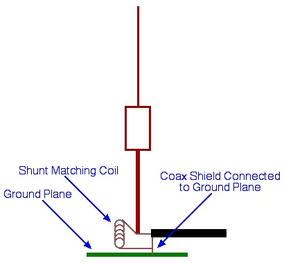
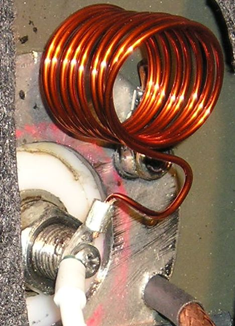
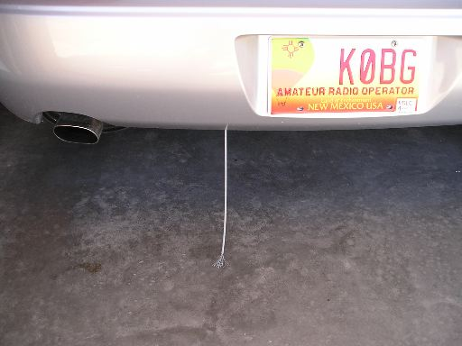

Basics
Every single mobile operator is plagued with static. There are several kinds, some of which we can control and some we can't. Knowing the difference is 90% of the cure.
Atmospheric static is the background noise you hear when listening to a clear frequency. It is caused by all manner of natural and man-made electrical discharges — even the stream of electrons from the sun and solar system contribute. It can be soft or so loud as to block all but the strongest signals. Short-term changes aren't evident in atmospheric static — in fact, you can use band noise as a signal source for comparing antennas, provided you have a QRM-free band to work with.
Electrical discharges are inherently high-frequency events by virtue of their fast rise times. Their frequency bandwidth can extend well into the UHF region. Noise blankers are nearly worthless against atmospheric static. DSP and audio filters can reduce the perceived level, but little else can be done about it.
Rain Static

Nature also generates so-called rain static, and it doesn't have to be raining for it to occur. It's caused by a difference in potential between the earth and moisture-bearing clouds. It usually starts as a small hiss building in crescendo until a discharge occurs. The discharge is usually a lightning strike, although you might not see or hear it.
Some people believe rain static is caused by moisture molecules physically hitting antenna elements. This is a false assumption. Rain static is an electrostatic phenomenon, not a mechanical one. It is more prevalent when humidity is high and/or when there is a nearby rain or snow storm, and it's especially bothersome when virga is present. There isn't much you can do to control rain static, although DC grounding the antenna element does help somewhat. Since it's a precursor to rain and possibly lightning, the right response is to QRT and pay attention to your driving.
DC Grounding the Antenna
As mentioned above, DC grounding the antenna does help control static. However, the more important reason to DC ground an antenna is safety. First, if the antenna were to contact a high-voltage overhead line, proper DC grounding will shunt the energy to the vehicle body rather than through your transceiver. The second reason is lightning protection — admittedly rare, but not impossible.
Detection of incoming signals follows a square-law function: signal strength changes by twice the number of dB that the signal itself changes. In plain terms, even a small reduction in static level makes a bigger difference in receivability than you'd expect from the numbers alone.
The best way to DC ground an HF mobile antenna is through a shunt coil. The shunt coil, along with a small amount of capacitance borrowed from the antenna (tuned slightly above operating frequency), forms a highpass LC network. This transforms the low input impedance (~25 ohms) to the feedline impedance (50 ohms), and provides a DC path to ground. Two benefits for the price of one component. See the Antenna Matching article for details.
Some forms of RFI sound very much like background static, and distinguishing between the two is difficult. The best first line of defense is to perform the standard noise abatement work — especially bonding the hood and exhaust system. See the Bonding article for the complete procedure.
Other Static Problems
Dust and other atmospheric pollutants can become charged when they rub against one another. They collect on the surface of the vehicle and antennas. Driving along dusty roads can cause dust static, especially when the humidity is low. Dust static is a steady buzz that never goes away until you stop — whereupon there's usually a pop and then silence. Once underway again, it starts back up. The perceived loudness generally increases with speed.

When vehicle AM radios first appeared, manufacturers were hard-pressed to solve the dust static problem. Their solution was special springs inside front axle grease cups to electrically connect axles and brake drums, plus graphite inside the tires. It worked, to a point. Today, conductive rubber compounds and metallic disc brakes provide a better solution — but you can still experience the problem.
Apparent Static from Motor Leads and Common Mode
There is one form of apparent static that deserves special mention. Improperly choked motor leads, or the absence of a proper common mode coax choke, allow these cables to act as part of the antenna. Since the motor leads and coax cable are routed inside the vehicle, whatever digital signal is generated by the vehicle's electronics can be heard on the receiver.
Some of the sensors attached to these digital devices — particularly ABS speedometer sensors — are speed-dependent, and are often indistinguishable from the rhythmic pattern of rolling static and ignition RFI. Thus controlling static, apparent or otherwise, is never a single band-aid cure. See the articles on Common Mode Currents and Antenna Controllers for the correct choking procedures.
Brake Dust and Mag Mounts
Most newer vehicles are being factory-equipped with ceramic brake pads. They last longer, provide better stopping power when hot or wet, and contain no asbestos. However, ceramic pads have metallic particles embedded to aid in reducing static buildup. As brake pads wear, minute amounts of metal are scrubbed off both the pads and the disks. These metallic particles cling to antenna mag mounts like glue. The oxidation of these trapped particles causes mooning — crescent-shaped scratch swirls — in the painted surface under mag mounts. Removing that kind of damage requires a repaint.
Corona Loss

Corona loss during transmission can be quite spectacular at high power. It also affects receive capability if no precautions are taken. The primary solution is a corona ball.
Corona balls are the small round things on the tips of most mobile antennas. The problem is, most commercial corona balls (typically 1/2-inch diameter) are too small to be effective, especially at high power. Worse, they often have sharp points — protruding set screws — which negate their purpose.
Make your own corona ball. Naugatuck Manufacturing sells 1-inch aluminum balls pre-drilled and tapped for a 10x32 set screw. Drill a hole for the whip about 15° from the pre-drilled hole. A 1-inch aluminum ball is a good compromise between weight and size, but only if you use a standard (or shortened) 102-inch whip — the lighter whips supplied with some commercial VHF antennas are not strong enough to properly support a 1-inch ball. If you use a properly-mounted cap hat at the very tip of the whip, there's no reason to use a corona ball at all.
Corona loss during receive is a bit of a misnomer. What's actually happening is static electricity building up on the antenna and vehicle, then arcing into the atmosphere from the very tip of the antenna. Without a corona ball or cap hat, what you hear is a series of snaps and pops indistinguishable from other types of static discharge.
Static Drains

Bleeding off static before it becomes a problem is exactly what a static drain does. Build one from a 5/32-inch piece of vinyl-covered stainless steel aircraft cable (available from Ace Hardware). Attach it to the transport tie-down using a heavy-duty lug that is both crimped and soldered. Remove about 1 inch of vinyl covering from the outer end and splay the individual wires outward.
The point is to position the drain as the last thing in the slipstream. The sharp wire ends aid the flow of electrons dissipating into the slipstream — exactly like the static drains found on every flying aircraft. The result is a series of pops and snaps that are easily handled by a noise blanker, rather than the steady roar that blocks out all signals. Done right, a static drain converts an overwhelming problem into a manageable one.

Odds & Ends
Controlling static isn't a one-trick-solves-all scenario. Just like bonding to control RFI, it takes time and effort to cover all of the bases. This is one area of mobile operation where a short-stop doesn't catch the ball.
Work through the list systematically: bond the hood and exhaust first (this solves the most problems), DC ground the antenna through a shunt coil, install a properly wound common mode choke on the coax feedline, install a corona ball or cap hat at the antenna tip, and add a static drain if dust static remains problematic. None of these steps is optional if you want a quiet receiver on the move.
Modern Considerations
Modern vehicles introduce some new wrinkles in the static control picture.
Electric Power Steering and Other Digital Noise Sources
Where older vehicles used hydraulic power steering, modern vehicles use electrically-assisted steering systems controlled by digital electronics. These systems generate their own form of noise — similar to the "apparent static" from ABS sensors discussed above — that can bleed into the receiver through improperly choked cables. The solution remains the same: proper common mode chokes on all control and coax cables, installed outside the vehicle.
Modern Tire Technology
Run-flat tires and other specialty tires may use different rubber compounds than standard tires, which can affect their static-dissipating properties. If you notice increased dust static after fitting run-flat tires, this is a plausible cause. The static drain described above is the practical remedy.
Carbon Fiber Body Panels
Carbon fiber reinforced polymer (CFRP) body panels are electrically conductive, but their conductivity is anisotropic — it varies depending on direction relative to the fiber weave. Carbon fiber panels do not bond effectively to the vehicle's RF ground plane using conventional copper braid straps. If your vehicle has carbon fiber panels adjacent to the antenna mount, plan on additional static control measures rather than relying on the panel for ground plane continuity.